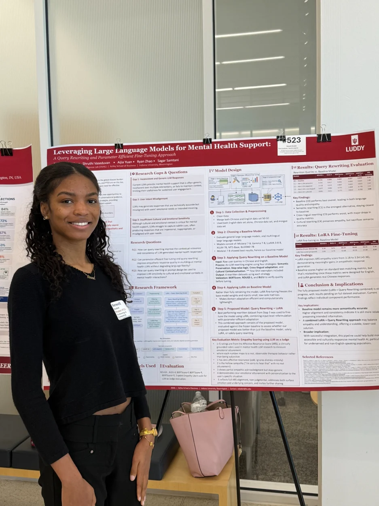
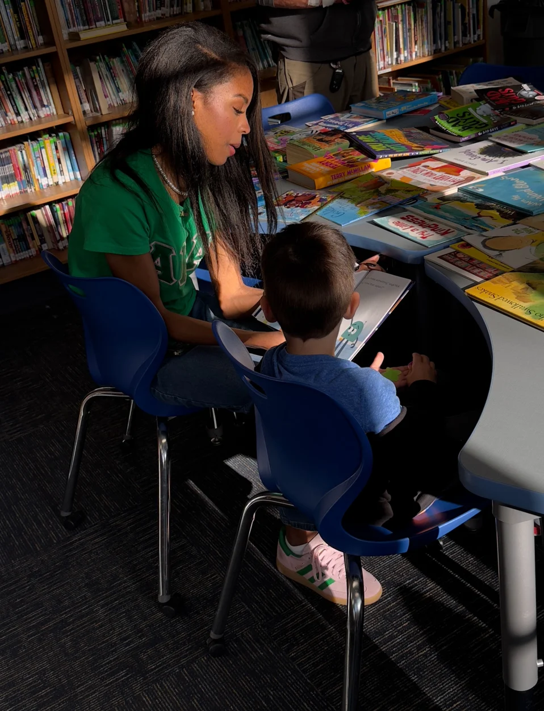
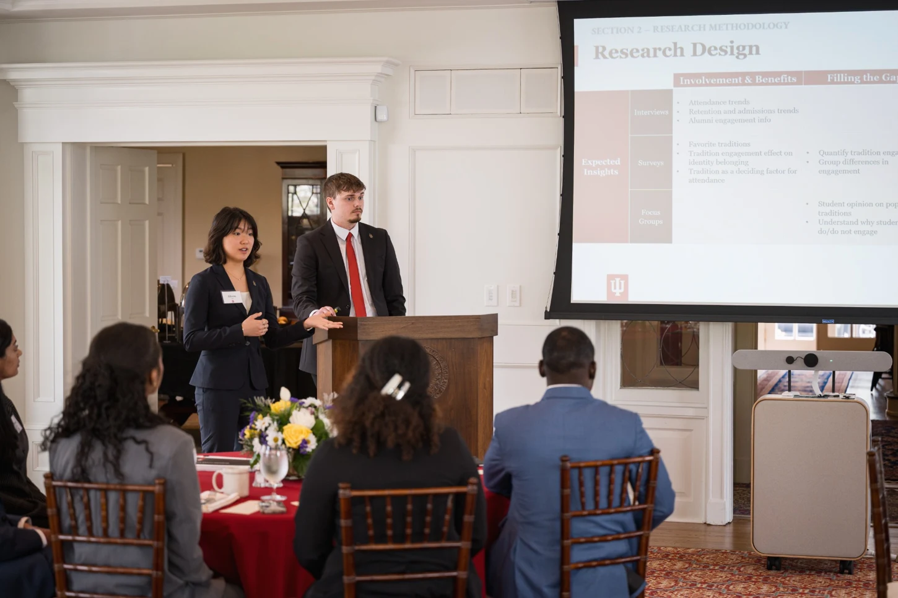
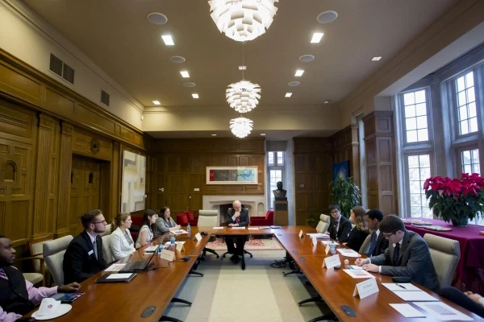
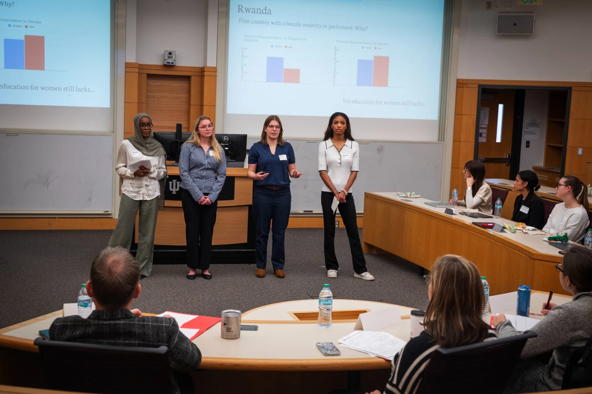
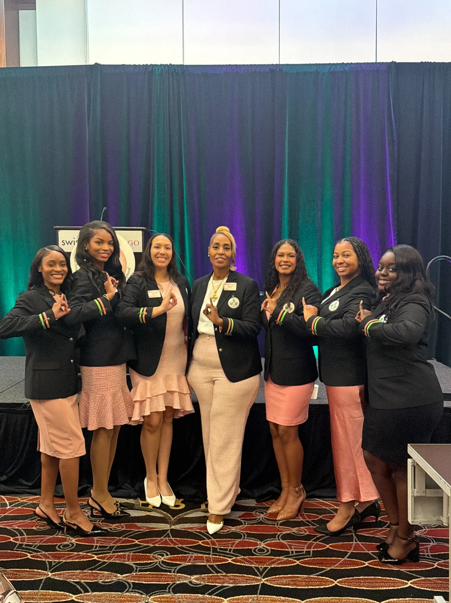
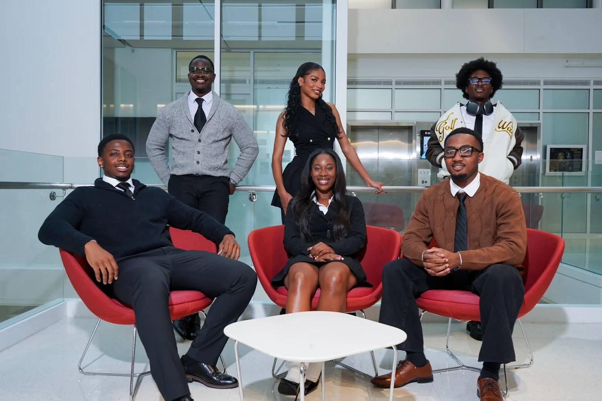
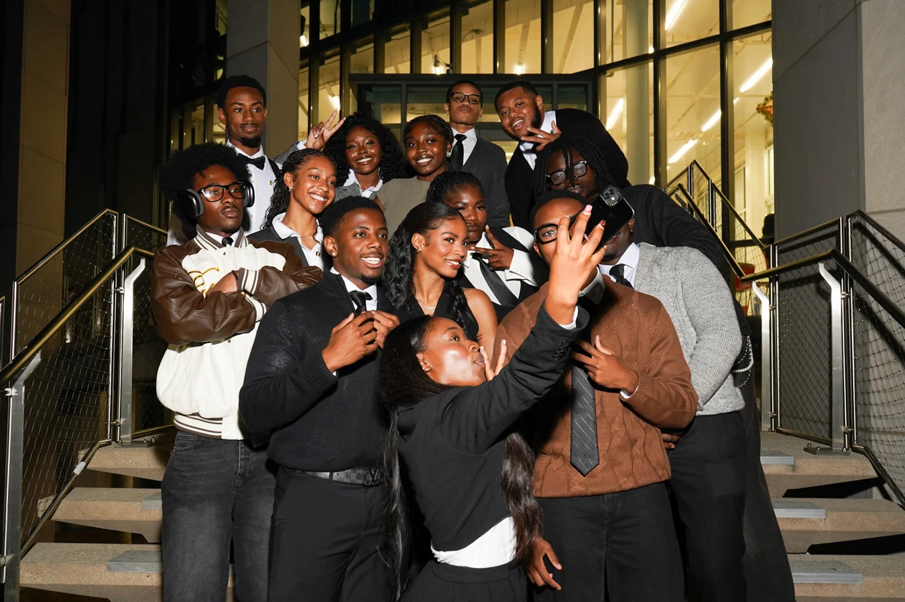
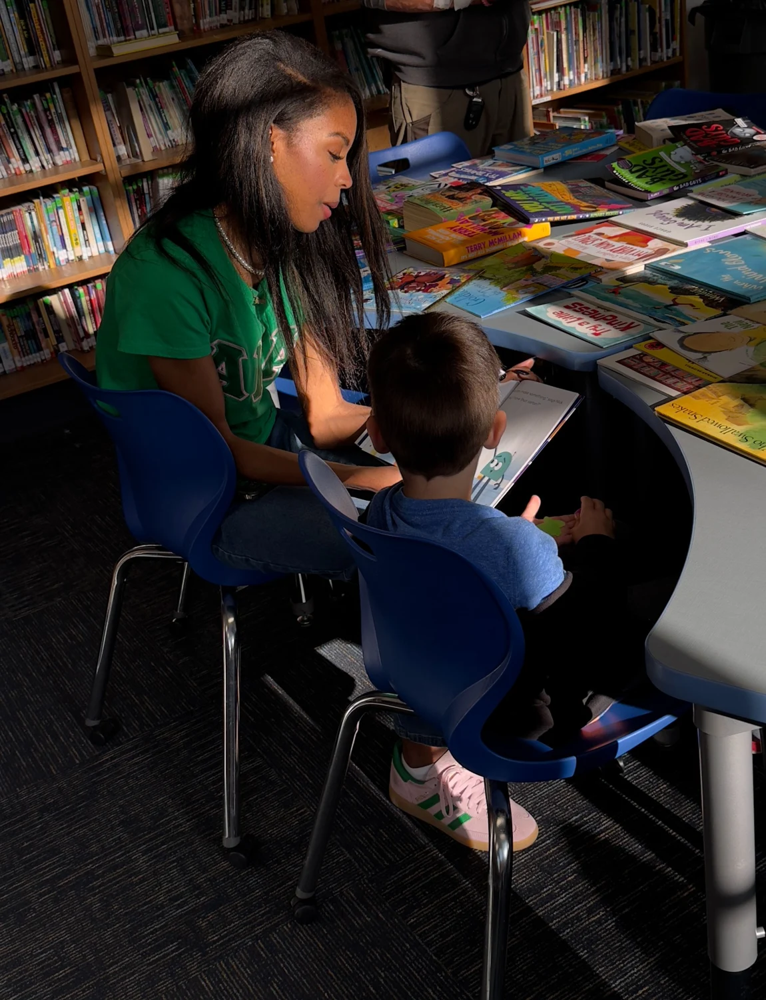

Software development
- Languages
- Python · Java · JavaScript · Kotlin · C · C++ · C#
- Web and APIs
- HTML · CSS · REST APIs · Spring Data JPA
- Development tools
- GitHub · Android Studio
Indiana University Bloomington · Class of 2028
Interested in Technology Consulting, AI, Program Management, and Data Analysis.
Select a card to explore · Hover or focus to pause
I am fascinated by the intersection where technology meets business challenges and creates opportunities for meaningful human impact.
As a Computer Science student at Indiana University studying Data Science and Business, I am interested in how data, artificial intelligence, and emerging technologies can solve complex organizational challenges.
Through award-winning research, NSF-funded projects, leadership experiences with the President of IU, and executive mentorship opportunities, I have been challenged to think beyond technical solutions by considering the organizational, human, and strategic factors that influence successful decision-making and implementation.
I am particularly interested in technology consulting, Artificial Intelligence, Program Management, and Data Analysis.



Let’s talk about what’s next.
Technology. Strategy. Meaningful impact.
CEWIT Women’s Research Poster Competition
Indiana University
Alpha Kappa Alpha Sorority, Incorporated
Fall 2024, Spring 2025, and Spring 2026
Indiana University Bloomington
Experience translating technical questions into structured research and practical recommendations.
Exploring machine learning, language, and well-being through undergraduate research at Indiana University.
In an NSF-funded research initiative at Kelley, I studied how to fine-tune and evaluate large language models for empathetic mental health interactions. I used Mistral 7B as a baseline and investigated how prompt engineering and query rewriting affect response quality in a multilingual setting.
With my research partner Shruthi Vasudevan, I also explored parameter-efficient fine-tuning through Low-Rank Adaptation (LoRA). We evaluated how the approaches affected model responses and shared the research for feedback. I’m grateful to Shruthi for her collaboration and contributions.
Developed a methodology for benchmarking LLM responses to folk neuroscience concepts against peer-reviewed scientific evidence, examining questions about dopamine, addiction, and digital well-being.
Identified and adapted an open-source AI video summarization tool, updating legacy code and dependencies to deploy it successfully in a current computing environment.


I serve on the 12-member 105th Board of Aeons, a student research and advisory board working with IU’s Office of the President. I examine university-wide policies and programs affecting a student population of more than 49,000. My work helps translate research findings into practical recommendations that university leaders can weigh when making decisions about the student experience.
A few ways I’ve turned data, code, and collaboration into something concrete.
Stratified 80/20 splits, 5-fold cross-validation, per-class precision, recall and F1 scoring, and confusion matrix analysis across all 114 genre categories.

My involvement spans international technology service, regional coordination, institutional research, and local outreach.
I serve on the International Technology Committee for an organization with more than 390,000 members globally. I was also selected for the 2026 International Leadership Fellows cohort.
As Undergraduate Cluster III Coordinator, I help plan conferences and leadership programming for undergraduate members across eight states in Alpha Kappa Alpha’s Central Region. I work with undergraduate chapters and regional leadership to coordinate programming, share updates, and bring members together for professional development and service.

I serve on a 12-member research and advisory board working with the Office of the President on university-wide issues that affect IU students.


I help lead operations and partner with employers on technical and career programming for student members.
As Vice President of Tau Chapter, I help turn chapter priorities into programs that serve IU students and the Bloomington community. I work with chapter officers and committees to plan events, coordinate with campus and community partners, and support initiatives in academic achievement, wellness, and service. One example is Scholastic Fest at the Banneker Community Center, where our chapter supported local literacy outreach.

My research at IU spans multilingual mental health AI at Kelley, the reliability of AI-generated neuroscience advice, and modernization of an open-source video summarization tool. Through the Board of Aeons, I also work with fellow student researchers to study university policies and programs and develop recommendations for the Office of the President.
Computer science at Indiana University Bloomington, with a Data Science & Machine Learning concentration and minors in Business and Psychology. Expected graduation: May 2028.
Download resume +Open PDF +